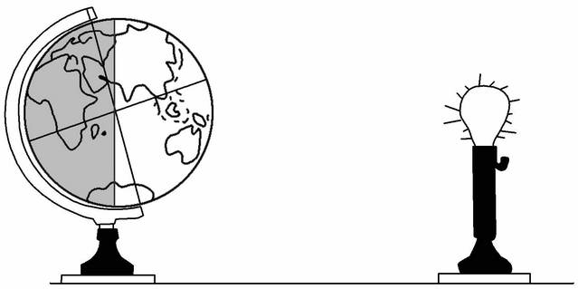
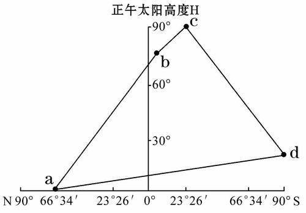
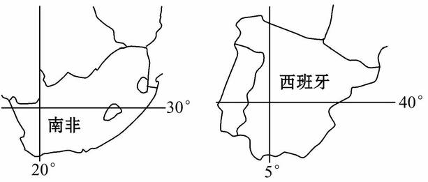
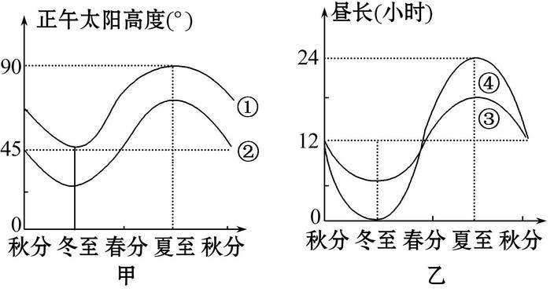
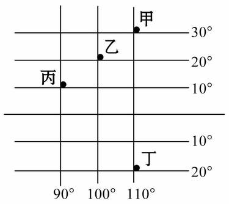
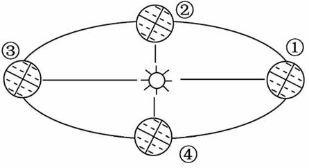
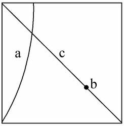
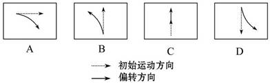
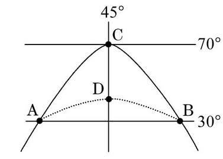
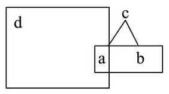

None - Fade - Slide - Convex - Concave - Zoom
选择班级
幻灯片样式
Black (default) -
White -
League -
Sky -
Beige -
Simple
Serif -
Blood -
Night -
Moon -
Solarized
地球是一颗既普通又特殊的行星。据此回答1、2题。
1.地球具有生命生存的温度条件，并不是因为( )
A.地球的宇宙环境稳定，日地距离适中
B.地球自转周期适宜，昼夜温差较小
C.各大行星各行其道，互不干扰
D.地球体积、质量适中，有浓密的大气
2.能够证明地球是太阳系中的一颗特殊行星的是( )
A.地球上形成了适宜生物生存的温度条件、大气条件和液态水
B.地球恰好位于太阳系的中心位置
C.地球处在一个比较稳定和安全的宇宙环境中，利于生命形成发展
D.地球是太阳系中唯一有卫星绕转的大行星
3.(2010·江苏学业水平测试)据报道， 2010 年太阳活动出现又一个最活跃期，下列关于太阳活动的说法正确的是
A.太阳活动主要包括色球层的黑子和光球层的耀斑
B.耀斑增多表明太阳活动增强，黑子增多表明太阳活动减弱
C.2010 年 6 月下旬是北极附近观察极光的最佳时间
D.2010 年出现非人为因素导致的无线电短波通讯中断
国家天文台曾经在日面上观测到两个活动区，并且观测到一次C2.0级耀斑。据此完成4、5题。4.在日面上观测到的两个活动区是( )
A.黑子
B.耀斑
C.日珥
D.太阳风
5.观测到的这次C2.0级的耀斑发生在太阳大气层的( )
A.光球层
B.色球层
C.日冕层
D.日珥
歌曲《祈祷》中唱道：“让地球忘记了转动啊，四季少了夏秋冬；让宇宙关不了天窗，叫太阳不西沉。”据此完成6、7题。
6.下列说法错误的是( )
A.歌词中的“转动”指的是地球的绕日公转
B.歌词中的“关不了天窗”是指一直处于白天
C.如果太阳不西沉，全球各地都会进入黑夜
D.黄赤交角的存在是春夏秋冬更替的重要原因
7.下列现象不是歌词中的“转动”引起的是( )
A.昼夜长短的变化
B.昼夜现象
C.正午太阳高度的变化
D.四季更替
8.(2010·浙江学业水平测试)将一盏电灯放在桌子中央代表太阳，在离电灯大约1米远的桌边放一个地球仪代表地球，拨动地球仪模拟地球自转运动。该实验能够演示的地理现象是( ) ①昼夜的更替 ②四季的更替 ③运动物体偏向 ④地方时差异
A.①③
B.①④
C.②③
D.②④
读下图，完成9、10题。
9.关于图中abcd四地自转角速度和线速度的叙述，正确的是
A.四地的角速度都相同
B.四地的角速度都不同
C.四地的自转线速度由小到大依次是 adbc
D.四地的自转线速度由大到小依次是 bcad
10.图中四地该日昼长由长到短依次是( )
A. a→ b→ c→ d
B. d→ c→ b→ a
C. c→ d→ b→ a
D. d→ a→ c→ b
第19届世界杯足球赛于2010年6月11日至7月12日在南非举行，最终西班牙队获得了冠军。结合南非和西班牙两国地图，回答11、12题。
11.南非世界杯期间，地球公转的速度( )
A.逐渐加快
B.逐渐减慢
C.先加快后减慢
D.先减慢后加快
12.世界杯期间，南非与西班牙相比( ) ①正午太阳高度大 ②正午太阳高度小 ③白昼时间较长 ④白昼时间较短
A.①③
B.②③
C.①④
D.②④
读图，回答13、14题
13.图甲和图乙中分别反映纬度较低的两条曲线是( )
A.①③
B.②④
C.②③
D.①④
14.下列城市正午太阳高度的变化与曲线①最接近的是
A.北京
B.上海
C.汕头
D.海口
15.不考虑地形起伏，图中各点最早迎接新年曙光的是
A.丁
B.丙
C.乙
D.甲
16.若甲、乙两地同时日落，下列说法正确的是( )
A.太阳直射南半球
B.太阳直射北半球
C.此时为春分日
D.甲地的昼长比乙地短
17.在纬度相同的乙、丁两地做水平运动的物体( )
A.偏转方向相同
B.乙向右偏，丁向左偏
C.都不偏转
D.乙向左偏，丁向右偏
北京时间2010年10月1日晚6时59分57秒，搭载着嫦娥二号卫星的长征三号丙运载火箭在西昌卫星发射中心点火发射。预计嫦娥二号卫星在约112小时后飞抵月球轨道。据此完成18、19题。
18．嫦娥二号卫星发射时，地球处在公转轨道上的位置应在图中( )
A.①→②
B.②→③
C.③→④
D.④→①
19.嫦娥二号卫星升空时，巴黎(2.2°E，48.52°N)的区时为
A.2010年10月1日11时8分45秒
B.2010年9月30日22时59分57秒
C.2010年9月30日23时8分45秒
D.2010年10月1日10时59分57秒
(2011·吉林高一检测)下图中a为晨昏线，c为经线，b为c线上地球自转线速度最大的点。读图回答20、21题。
20.当a、c两线重叠时，下列叙述正确的是( )
A.北京和海口昼夜等长
B.北极圈及其以北有极昼现象
C. b地正午太阳高度角达一年中最小值
D.此时地球位于公转轨道的近日点附近
21.下面四幅图中，能正确表示b地水平运动物体方向的是
A
B.
C
D
图中弧ACB是晨昏线，C点位于45°W经线上。读图回答22、23题。
22.飞机从A地飞往B地，最近的航线是( ).
A.从A地出发沿纬线向东飞到B地
B.从A地出发沿弧ADB飞到B地
C.从A地出发沿弧ACB飞到B地
D.从A地出发沿经线向北经北极点，再沿经线向南飞到B地
23.若图中A地正当日出，此时全球日期是( )
A.只有一个日期 A
B.两个日期各占一半
C.今天的范围小于一半
D.今天的范围大于一半
24.若下图中a是d的一部分，a和b组成c，则图中a、b、c可分别表示的概念是( )
A.上地幔的顶部(软流层以上)、地壳、岩石圈
B.上地幔、下地幔、地幔.
C.外核、内核、地核
D.地壳、地幔、地核
25.有关地球外部圈层的说法，正确的是( )
A.大气圈是由大气组成的简单系统
B.水圈是一个连续不规则的圈层
C.生物圈包括大气圈、水圈的全部
D.地球的外部圈层之间关系密切，但和地球的内部圈层没有关系